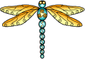
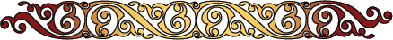
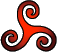

Welcome to my page!!!!!

You can use my page to get a computer tea leaf reading.
Click the button to take a picture of your cup, after you've drank your tea and swirled it around 3 times.
Get reading
Take Picture

About this site
Special Thanks to
Aon Celtic Art
for the Lovely Graphics